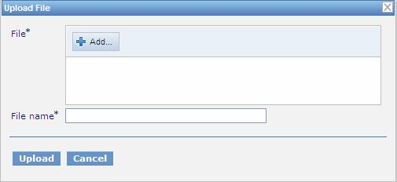

Modifying Project Contents
This section describes modifying the physical structure of a project.
The following topics are included in this section:
Creating a Folder
To create a new folder in the project structure, proceed as follows:
-
If the project is not checked out, check it out as described in Checking Out a Project.
-
In the project tree, select the parent folder in which the new folder
must be
created.
To create a root level folder, the project name must be selected in the
project
tree.
-
In the right pane, click Add Folder.
-
In the Add Folder window, enter the folder name and click Add.
Uploading a File
To upload a file to a project folder, proceed as follows:
-
If the project is not checked out, check it out as described in Checking Out a Project.
-
In the project tree, select the folder in which the file must be
uploaded.
To upload a file to the root level, the project name must be selected in
the project
tree.
-
In the right pane, click Upload File.
The Upload File window appears.

Figure 33: Uploading a file
-
In the File field, select the file to be uploaded.
-
In the File name field, enter the name of the file to be used in design time repository.
-
Click Upload.
Deleting a Folder or a File
To delete a folder or a file in the project structure, proceed as
follows:
-
If the project is not checked out, check it out as described in Checking Out a Project.
-
Perform one of the following steps as required:
-
In the project tree, select the folder or file to be deleted and, in the
right pane, click
Delete.
Figure 34: Deleting a project element
-
In the project tree, select the parent folder and, in the right pane, in
the
Elements tab, click Delete  .
.
Figure 35: Deleting project elements in the Elements tab
A confirmation window appears.
-
In the confirmation window, click Delete.